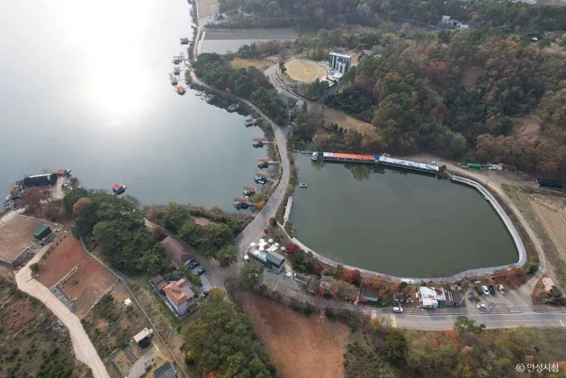
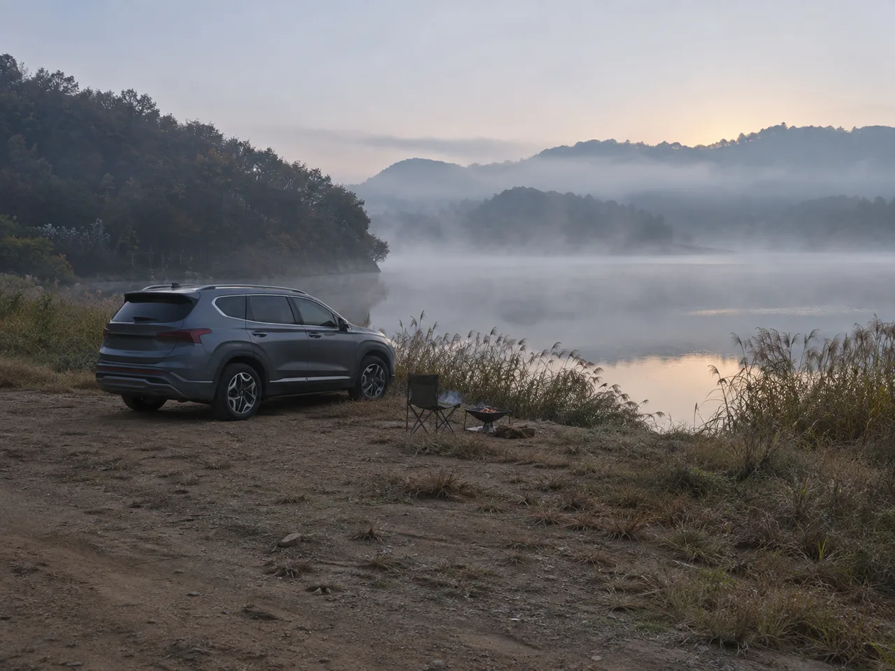
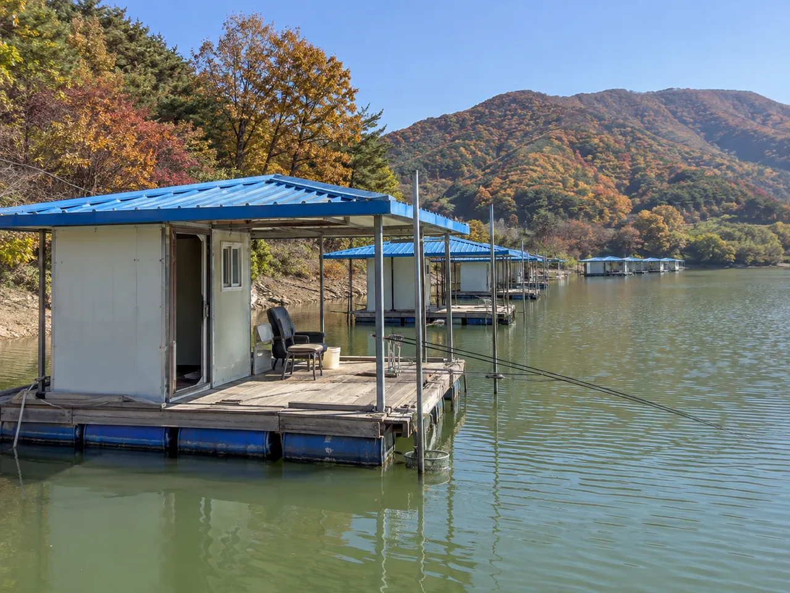
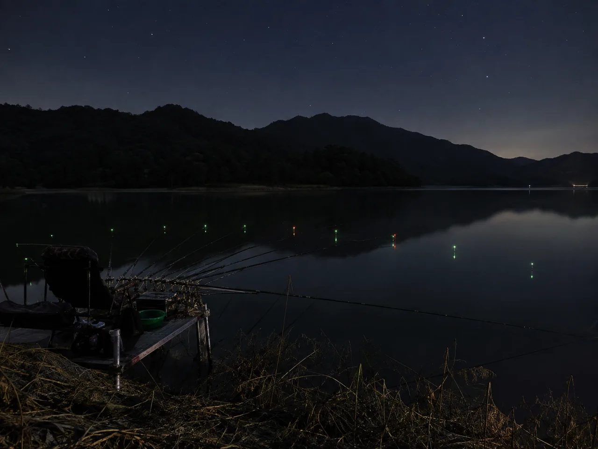
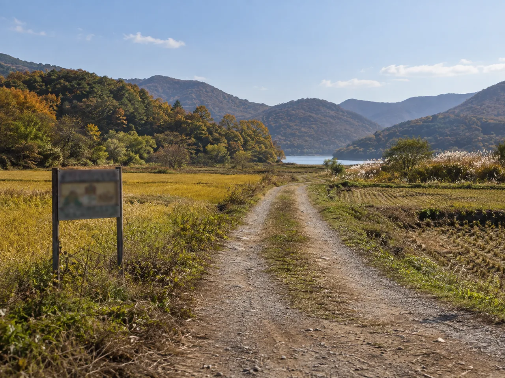

▲ 안성 고삼저수지는 안성 최대 규모 저수지로, 사설 야영장 형태로 운영되며 선착순 입장 방식의 차박지로 유명하다 ⓒ 안성시청
수도권 차박 커뮤니티에서 저수지 얘기가 나오면 빠지지 않고 등장하는 두 곳이 있다. 경기 화성 봉담읍의 기천저수지와 안성 고삼면의 고삼저수지다. 둘 다 '물멍 차박'과 낚시를 동시에 즐길 수 있는 곳으로 꼽히지만, 막상 두 곳을 나란히 놓고 보면 운영 방식부터 완전히 다르다. 한쪽은 화장실도 수도도 없는 흙바닥 노지이고, 다른 한쪽은 이용료를 받는 사설 야영장 형태로 오랫동안 운영돼 왔다. 어느 쪽이 내 차박 스타일에 맞는지, 실제 정보를 근거로 따져봤다.
1. 화성 기천저수지 — 화장실 없는 노지, 그런데도 몰린다
경기 화성시 봉담읍 건달산로 일대에 있는 기천저수지는 1984년 12월 준공된 평지형 농업용 저수지다. 야산으로 둘러싸인 분지 지형이라 분위기가 아늑하고, 수도권에서 접근이 편리해 가족 낚시터로도 오래 알려져 있다. 최근 몇 년 새 캠핑·차박 커뮤니티에서 '노지 뷰가 좋은 곳'으로 입소문이 나면서 낚시객뿐 아니라 차박객들도 몰리기 시작했다.

▲ 기천저수지 노지 차박지의 이른 아침 물안개 풍경을 재현한 연출 이미지(AI 생성, 실제 현장 사진 아님)
문제는 편의시설이다. 캠핑 정보 사이트에 따르면 기천저수지 상류 진입로 쪽 노지 캠핑지는 화장실·개수대·수도가 전혀 없고 바닥도 맨흙이다. 승용차와 소형 트레일러는 진입할 수 있지만, 정해진 공식 요금 체계도 없다. 방문 후기에는 '어류비 명목으로 15,000원'이나 '1박에 3만 원'을 현장에서 받아 갔다는 언급이 있는데, 이는 저수지 측이나 낚시터 관리인이 개별적으로 걷는 비공식 비용에 가까워 정식 야영장 이용료와는 성격이 다르다. 방문 후기 중에는 주말마다 사람이 몰려 혼잡하고 쓰레기 관리가 안 된다는 지적도 적지 않다.
바로 옆엔 정식 등록 캠핑장도 있다
다만 기천저수지 인근에는 문화체육관광부 산하 '고캠핑' 포털에 정식 등록된 민간 사설 캠핑장, '화성기천캠핑장'도 있다. 주소는 화성시 봉담읍 건달산로 269이며, 일반야영장 9면 규모에 바닥은 파쇄석으로 조성돼 있다. 이용료는 오토캠핑 1박 기준 주중 4만 원, 주말 6만 원이고 전화(010-8728-6003) 또는 온라인으로 실시간 예약이 가능하다. 즉 '기천저수지 차박'이라는 이름 아래 실제로는 무료에 가까운 노지 진입로와, 요금을 내고 정식 예약하는 등록 캠핑장이라는 서로 다른 두 형태가 공존하는 셈이다.
2. 안성 고삼저수지 — 요금 내면 선착순으로 확실하게 합법
경기 안성시 고삼면 봉산리 일대의 고삼저수지는 1963년 완공된 안성 최대 규모의 농업용 저수지다. 대한민국 구석구석(한국관광공사)이 정식으로 소개하는 여행지이기도 하다. 새벽 물안개가 피어오르는 몽환적인 풍경으로 영화 촬영지로 쓰이기도 했고, 저수지 곳곳에 늘어선 수상 좌대가 만드는 독특한 경관 때문에 드라이브 코스로도 자주 꼽힌다.

▲ 고삼저수지 특유의 수상 좌대 풍경을 재현한 연출 이미지(AI 생성, 실제 현장 사진 아님)
고삼저수지가 기천저수지와 가장 다른 지점은 운영 주체가 명확한 사설 야영장 형태라는 것이다. 별도 예약 시스템 없이 현장에서 선착순으로 입장하며, 이용료는 당일 1만 원, 1박 2만 원 수준으로 인원·텐트 수에 따라 조정된다. 요금을 내고 정식으로 이용하는 구조이다 보니 법적으로 애매할 일이 적고, 호수 앞에는 자유 주차가 가능하며 건너편에는 식당과 화장실 같은 기본 편의시설도 갖춰져 있다. 다만 화성 기천저수지의 정식 등록 캠핑장과 달리 데크나 전기 시설까지는 없어, 노지에 가까운 차박 경험에 더 어울린다.
3. 정면 비교 — 위치·시설·허용여부·낚시·접근성
두 저수지를 다섯 가지 기준으로 정리하면 다음과 같다. 표에서 보듯 기천저수지는 '무료에 가깝지만 불편한 노지'와 '요금은 비싸지만 정식 등록된 캠핑장'으로 양분돼 있고, 고삼저수지는 그 중간 지점에서 저렴한 요금과 최소한의 편의시설을 함께 제공한다.
| 구분 | 화성 기천저수지 | 안성 고삼저수지 |
|---|---|---|
| 위치 | 경기 화성시 봉담읍 건달산로 일대 | 경기 안성시 고삼면 봉산리 일대 |
| 운영 형태 | 노지 진입로(무허가에 가까움) + 정식 등록 사설 캠핑장 공존 | 단일 사설 야영장(선착순 입장) |
| 이용료 | 노지 15,000~30,000원(비공식) / 정식 캠핑장 4만~6만 원(1박) | 당일 1만 원, 1박 2만 원 |
| 편의시설 | 노지: 화장실·수도 없음, 맨흙바닥 / 정식 캠핑장: 야영장 9면, 파쇄석 바닥 | 호수 앞 자유 주차, 건너편 식당·화장실 |
| 낚시 특징 | 수심 깊어 밤낚시 특화, 월척급 붕어·잉어, 겨울 빙어낚시 | 수상좌대 다수, 배스·붕어 낚시 명소 |
| 접근성 | 일부 비포장 진입로 포함, 승용차·소형 트레일러 진입 가능 | 포장도로, 호수 둘레 주차 공간 넓음 |
| 주변 연계 명소 | 봉담읍 일대 산책로 | 미리내성지, 봉산교, 무지개공원, 꽃뫼카페 |
4. 낚시로 보면 성격이 완전히 갈린다
같은 '저수지 낚시'라도 기천저수지와 고삼저수지는 스타일이 다르다. 한국낚시업중앙회에 소개된 기천낚시터는 수심이 깊어 밤낚시가 잘되는 곳으로, 월척급 붕어와 잉어가 주로 낚이며 떡밥·지렁이·새우 등의 미끼가 쓰인다. 겨울철에는 빙어낚시 명소로도 이름이 나 있다. 반면 고삼저수지는 저수지 둘레에 방갈로형 수상 좌대가 줄지어 떠 있는 구조로, 배스낚시 포인트로도 자주 언급되고 붕어낚시객도 꾸준히 찾는다.

▲ 기천저수지의 밤낚시 분위기를 재현한 연출 이미지(AI 생성, 실제 현장 사진 아님)
밤낚시 위주로 조용히 낚싯대만 드리우고 싶다면 기천저수지 쪽이, 좌대에 앉아 여럿이 낚시와 캠핑을 겸하고 싶다면 고삼저수지 쪽이 더 맞는 그림이다. 다만 두 곳 모두 특정 구역은 유료 낚시터로 별도 운영되는 경우가 있어, 현장 안내판이나 관리인 확인 없이 아무 곳에나 좌대를 놓고 낚시하는 것은 피하는 게 안전하다.
5. 가는 길과 진입로 — 의외로 여기서 갈린다
차박에서 은근히 중요한 게 진입로 상태다. 기천저수지는 저수지 상류 쪽 노지 진입로가 좁은 비포장길로 이어지는 구간이 있어, 비 온 뒤에는 노면이 질척해질 수 있다는 후기가 있다. 반면 화성기천캠핑장처럼 정식 등록된 캠핑장은 포장도로로 접근하는 경우가 많아 진입 자체는 어렵지 않다.

▲ 저수지로 향하는 좁은 비포장 진입로를 재현한 연출 이미지(AI 생성, 실제 현장 사진 아님)
고삼저수지는 이 점에서 상대적으로 수월하다. 호수를 낀 도로가 포장돼 있고 자유 주차가 가능한 구간도 넓은 편이라, 초보 차박객이라면 고삼저수지 쪽 접근이 더 무난하다. 고삼저수지 주변에는 천주교 성지인 미리내성지, 봉산교, 무지개공원, 꽃뫼카페 등 함께 들를 만한 곳도 있어 낮에는 드라이브·주변 관광을, 밤에는 차박을 즐기는 일정을 짜기에도 좋다. 고삼저수지에 대한 더 자세한 정보는 대한민국 구석구석에서 확인 가능하다. 대한민국 구석구석 고삼저수지 페이지 바로가기

▲ 저수지 차박이라도 '야영·취사 금지' 표지판이 붙은 구역은 피해야 한다. 두 저수지 모두 지정되지 않은 구역까지 임의로 넓혀 이용하는 것은 권장되지 않는다 ⓒ 자료 사진
6. 정리 — 편함을 원하면 고삼, 조용함을 원하면 기천(정식 캠핑장)
결론적으로 두 저수지는 서로 다른 니즈를 채워준다. 화장실·식당 같은 최소한의 편의시설과 접근 편의성을 중시한다면 이용료 부담이 적고 운영 주체가 분명한 고삼저수지가 낫다. 반대로 인적 드문 노지 분위기와 밤낚시 정취를 원한다면 기천저수지 쪽이 매력적이지만, 노지 구간은 화장실도 수도도 없고 비공식 현금 요금이 오간다는 점을 감안해야 한다. 이 불편함을 감수하고 싶지 않다면 바로 옆의 정식 등록 캠핑장, 화성기천캠핑장을 예약하는 편이 안전하다.
어느 쪽을 택하든 저수지는 농업용수를 공급하는 시설이라는 사실을 잊지 말아야 한다. 지정되지 않은 구역에 무단으로 차량을 세우거나 취사·야영을 하는 행위는 관리 주체와 갈등을 빚을 수 있으므로, 방문 전 현장 안내판이나 관리사무소 확인을 통해 그날그날의 규정을 확인하는 습관이 필요하다.